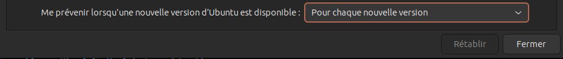
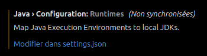
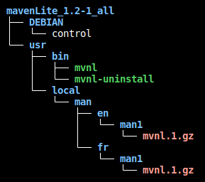

Documentation d'installation et de configuration de différents logiciels et explications de manipulations diverses
Règles
- "
Saisie utilisateur"
- '
Elément cliquable/sélectionnable'
Nom de fichier, dossier ou autre- <Élément à remplacer>
lien, raccourci clavier et phrase de demande de saisie
commande, extrait code et extrait de fichier
Table des matières
Manipulations diverses
Créer une clé USB bootable avec Ventoy - Linux
Tous les logiciels utilisés dans cette section possède une documentation pour les installer dans la section Installation de logiciels
- Brancher la clé USB
- Réinitialiser la clé USB (voir la section
Réinitialiser une clé USB ou un disque dur)
- Créer une partition sur la clé USB (voir la section
Allouée la partition grace à GParted)
- Créer le système qui permet à l'ordinateur de démarrer sur la clé USB (voir la section
Utilisation de Ventoy, sous-section de Ventoy (Multi-boot USB) - Linux)
- Ajouter des ISO dans la clé USB (voir la section
Ajouter des ISO dans la clé USB Ventoy, sous-section de Ventoy (Multi-boot USB) - Linux)
- Démarrez l'ordinateur sur la clé USB Ventoy (voir la section
Démarrer un ordinateur sur une clé USB avec Ventoy)
- Suivez les instructions d'installation de l'OS. Une documentation pour l'installation de différent OS est disponible dans le fichier
doc_VM_et_OS
Réinitialiser une clé USB ou un disque dur
Supprimme toutes les données et toute les partitions de la clé USB
-
fermet tout les gestionnaires de fichiers et terminaux ouverts sur la clé USB.
-
Ouvrez un terminal
-
Passez en mode admin :
sudo su
-
Listez les lecteurs :
fdisk -l
-
Administrez le lecteur de votre choix :
X est la lettre de la clé USB
fdisk /dev/sdX
dans mon cas :
fdisk /dev/sda
-
Supprimez toutes les partitions : "d X"
X est le numéro de la partition, dans mon cas : "d 1" et "d 2"
-
Créez une nouvelle partition : "n"
-
Choisissez le type de partition : "p"
-
Choisissez le numéro de la partition : "1"
-
Choisissez le premier cylindre, laisser la valeur par defaut et appuyer sur entrer
-
Choisissez le dernier cylindre, laisser la valeur par defaut et appuyer sur entrer
-
Sauvegardez les modifications : "w"
-
Quittez fdisk : "q"
Vous avez maintenant une clé USB vierge avec 1 partition non allouée
Allouée la partition grace à GParted
- Ouvrez GParted
- Dans la liste déroulante en haut à droite, sélectionnez la clé USB
- Clique droit sur la partition non allouée
- Sélectionnez '
Nouvelle'
- Dans 'Espace libre précédent (Mio)', entrez le minimum, dans mon cas "
1"
- Laisser tout les autres champs par défaut
- Sélectionnez le système de fichier de votre choix, dans mon cas "
ext4"
- Cliquez sur '
Ajouter'
Ventoy (Multi-boot USB)
Utilisation de Ventoy
-
Brancher la clé USB
-
Ouvrez le gestionnaire de fichier
-
Placer vous dans le dossier /opt/ventoy-<version>/
-
Activez les droits d'exécution du logiciel : clic droit sur 'VentoyGUI.x86_64' > 'propriété' > 'Permissions' > cochez 'Autoriser l'exécution du fichier comme un programme'
-
Lancer le logiciel en mode GUI : Double cliquer sur le fichier VentoyGUI.x86_64

-
Si l'anglais ne vous cinvient pas allez dans le menu 'Language' puis choisir la langue qui vous convient
-
Sélectionner la clé USB dans la liste déroulante 'Périphérique'
-
Cliquer sur le bouton 'Installer'
-
Une fois l'installation terminée, fermer la fenêtre
Ajouter des ISO dans la clé USB Ventoy
-
Télécharger les ISO de votre choix.
-
Placer vous dans la racine de votre clé USB :
cd /media/${USER}/<nom_de_la_cle_USB>
-
Créer un dossier pour chaque ISO :
mkdir <nom_du_dossier>
-
Copier et synchroniser l'ISO dans le dossier :
- Cette opération prend plusieurs minutes
cp -v ~/Téléchargements/<nom_du_fichier_ISO> <nom_du_dossier>/ && sync
Démarrer un ordinateur sur une clé USB avec Ventoy
- Brancher la clé USB sur un ordianateur éteint
- Démarrer l'ordinateur
- Quand le logo du constructeur apparait, appuyer sur la touche
F2 (ou F12 selon les constructeurs) pour accéder au BIOS.
- Dans le BIOS, aller dans l'onglet '
Boot' ou 'Boot Configuration'
Attention l'ordre et le nom de ces option peuvent varié en fonction du constructeur de votre PC mais la logique reste la même donc vous pouvez quand même vous appuyer sur cette documentation
- Sélectionner '
Add New Boot Option'
- Sélectionner '
Add boot option'
- Entrer le nom que vous voulez, dans mon cas "
cle usb"
- Sélectionner '
Path for boot option'
- Sélectionner la partition qui correspond à votre clé USB, dans mon cas
PCI(10|0)\USB(2,0)\HD(Part2,Sig5FA02450)
A partir d'ici il ne devrai plus y avoir de différence
- Sélectionner le fichier
/EFI/BOOT/grub.efi.
- Choisissez si vous voulez activé le '
Secure Boot', dans mon cas je le laisse désactivé pour éviter des potentiel erreur de compatibilité avec Debian 12.
- Sélectionner le mode de Secure Boot entre '
Deployed Mode' et 'Audit Mode', dans mon cas j'ai laisser par défaut, c'est à dire 'Deployed Mode'.
- Pour toute les question de '
Key Management' j'ai laisser les options par défaut.
- Sélectionner '
Create' ou 'Add Boot Option'
- Mettre la clé USB en premier dans la liste des périphériques de démarrage.
- Sauvegarder les modifications en appuyant sur '
APPLY CHANGES'
- Quitter le BIOS en appuyant sur '
EXIT'.
- L'ordinateur vas redémarrer et vous allez arriver sur le menu de démarrage de Ventoy
- Sélectionner l'ISO que vous voulez démarrer
- Sélectionner le mode de démarrage, dans mon cas : '
Boot in normal mode'
- Suiver les instructions d'installation de l'OS
Changer le point de montage de la partition Windows sous Ubuntu desktop 22.04 LTS, 23.04 et 23.10
-
Récupérer le nom de la partition windows :
sudo fdisk -l
-
Sortie de la commande :
...
Périphérique Début Fin Secteurs Taille Type
/dev/nvme0n1p1 2048 309247 307200 150M Système EFI
/dev/nvme0n1p2 309248 571391 262144 128M Réservé Microsoft
/dev/nvme0n1p3 571392 629715869 629144478 300G Données de base Microsoft
/dev/nvme0n1p4 629716992 632066047 2349056 1,1G Environnement de récupérati
/dev/nvme0n1p5 632066048 962566143 330500096 157,6G Système de fichiers Linux
/dev/nvme0n1p6 962566600 998334463 35767864 17,1G Environnement de récupérati
/dev/nvme0n1p7 998334464 1000214527 1880064 918M Environnement de récupérati
...
-
Démonter la partition windows qui se nomme dans mon cas /dev/nvme0n1p3 mais ça peut être différent :
sudo umount /dev/nvme0n1p3
-
Créer le dossier dans lequel sera monté la partition :
sudo mkdir /OS
-
Donner les droits d'accès au dossier sinon la partition ne pourra pas être monté dans ce dossier :
sudo chmod 777 /OS
-
Vérifier que la partition peut être monté dans le dossier :
sudo mount /dev/nvme0n1p3 /OS
-
Si cette opération à fonctionner, vous pouvez démonter la partition à nouveau puis passer à l'étape suivante
sudo umount /dev/nvme0n1p3
-
Copier le fichier /etc/fstab dans le dossier /etc/fstab_sauvegarde :
sudo cp /etc/fstab /etc/fstab_sauvegarde
-
Ajouter ces lignes au fichier /etc/fstab :
# Montage de la partition Windows
/dev/nvme0n1p3 /OS ntfs3 rw,user,auto,exec,gid=1000,uid=1000,umask=002, utf8,codepage=850,shortname=mixed 0 0
- Chaque champs est séparé par une tabulation
- "
# Montage de la partition Windows" : commentaire optionnel
- "
/dev/nvme0n1p3" : nom de la partition
- "
/OS" : dossier dans lequel sera monté la partition
- "
ntfs3" : système de fichiers de la partition
- "
rw,user,auto,exec,gid=1000,uid=1000,umask=002, utf8,codepage=850,shortname=mixed" : options de montage
- "
0" : 0 pour ne pas faire de sauvegarde de la partition, 1 pour faire une sauvegarde de la partition
- "
0" : 0 pour ne pas vérifier la partition au démarrage, 1 pour vérifier la partition au démarrage
-
Redémarrer l'ordinateur (cela peut prendre quelque minutes) :
sudo reboot
Monter un dossier uniquement un dossier
Attention, un dossier peut être monter uniquement si la partition sur laquelle il se trouve est monté au préalable
-
Créer le dossier dans lequel sera monté le dossier :
sudo mkdir /home/${USER}/<nom_du_dossier>
-
Executer la commande suivant pour monter le dossier
sudo mount --bind /<chemin_du_dossier_a_monte> /home/${USER}/<nom_du_dossier>
Exécuter un script shell au démarrage d'Ubuntu 22.04 ou supérieur
Exécuter le script en tant que super administrateur (pour les commandes sudo)
-
Ouvrer le fichier crontab en administrateur grace à la commande suivante :
sudo crontab -u root -e
-
Si c'est la première fois que vous éditer ce fichier un choix d'éditeur vous sera demander. Choisissez celui que vous voulez mais je vous conseil fortement d'utiliser nano qui doit être en numéro 1
-
Ajouter la ligne suivante à la fin du fichier
Surtout n'utiliser pas de variable d'environnement comme ${USER} parce qu'il est lancer en tant que root et que la variable ${USER} est vide lors de l'éxecution du script
@reboot /path/to/script.sh
-
Sauvegarder le fichier
Ctrl + X
-
Confirmer la sauvegarde
-
Ne modifier surtout pas pas le nom du fichier, appuyer sur entrer pour confirmer le nom qui entrer par défaut
-
Redémarrer l'ordinateur pour vérifier que le script s'exécute bien au démarrage
reboot
Exécuter le script en tant que l'utilisateur de la session en cours d'utilisation
-
Ouvrer le fichier crontab grace à la commande suivante :
crontab -e
-
Si c'est la première fois que vous éditer ce fichier un choix d'éditeur vous sera demander. Choisissez celui que vous voulez mais je vous conseil fortement d'utiliser nano qui doit être en numéro 1
-
Ajouter la ligne suivante à la fin du fichier
@reboot /path/to/script.sh
-
Sauvegarder le fichier
Ctrl + X
-
Confirmer la sauvegarde
-
Ne modifier surtout pas pas le nom du fichier, appuyer sur entrer pour confirmer le nom qui entrer par défaut
-
Redémarrer l'ordinateur pour vérifier que le script s'exécute bien au démarrage
reboot
Mettre à jour Ubuntu 23.04 Lunar Lobster vers Ubuntu 23.10 Mantic Minotaur
-
Vérifier que vous êtes bien sur Ubuntu 23.04 grâce à la commande suivante
Il peut être nécessaire de l'installer (via le packet apt neofetch)
neofetch
-
Vous pouvez voir dans la sortie de la commande qu'en face de OS il y a écrit Ubuntu 23.04 avec l'architecture de votre système, dans mon cas x86_64
.-/+oossssoo+/-. floris@floris-Inspiron-5402
`:+ssssssssssssssssss+:` ---------------------------
-+ssssssssssssssssssyyssss+- OS: Ubuntu 23.04 x86_64
.ossssssssssssssssssdMMMNysssso. Host: Inspiron 5402
/ssssssssssshdmmNNmmyNMMMMhssssss/ Kernel: 6.2.0-34-generic
+ssssssssshmydMMMMMMMNddddyssssssss+ Uptime: 16 hours, 5 mins
/sssssssshNMMMyhhyyyyhmNMMMNhssssssss/ Packages: 1893 (dpkg), 15 (snap)
.ssssssssdMMMNhsssssssssshNMMMdssssssss. Shell: bash 5.2.15
+sssshhhyNMMNyssssssssssssyNMMMysssssss+ Resolution: 3840x2160
ossyNMMMNyMMhsssssssssssssshmmmhssssssso DE: GNOME 44.3
ossyNMMMNyMMhsssssssssssssshmmmhssssssso WM: Mutter
+sssshhhyNMMNyssssssssssssyNMMMysssssss+ WM Theme: Adwaita
.ssssssssdMMMNhsssssssssshNMMMdssssssss. Theme: Yaru-dark [GTK2/3]
/sssssssshNMMMyhhyyyyhdNMMMNhssssssss/ Icons: Yaru [GTK2/3]
+sssssssssdmydMMMMMMMMddddyssssssss+ Terminal: gnome-terminal
/ssssssssssshdmNNNNmyNMMMMhssssss/ CPU: 11th Gen Intel i7-1165G7 (8) @ 4.700GHz
.ossssssssssssssssssdMMMNysssso. GPU: Intel TigerLake-LP GT2 [Iris Xe Graphics]
-+sssssssssssssssssyyyssss+- Memory: 4175MiB / 15712MiB
`:+ssssssssssssssssss+:`
.-/+oossssoo+/-.
-
Ouvrez le logiciel Logiciels et mise à jour (en anglais Software & Updates)

-
Allez dans l'onglet 'Mise à jour'

-
Changer la valeur de 'Me prévenir lorsqu'une nouvelle version d'Ubuntu est disponible' en 'Pour chaque nouvelle version'

-
Fermer le logiciel de mise à jour
-
Ouvrer un terminal
-
Exécuter la commande suivante pour chercher les mises à jour de paquet à faire :
sudo apt update
-
Exécuter la commande suivante pour mettre à jour les paquets :
sudo apt upgrade
-
Ouvrer le fichier /etc/update-manager/release-upgrades avec un éditeur de texte :
code /etc/update-manager/release-upgrades
-
Vérifier que la dernière ligne est la même que celle ci-dessous et que la valeur de Prompt est bien normal, si se n'est pas le cas modifier votre fichier
-
Résultat attendu :
# Default behavior for the release upgrader.
[DEFAULT]
# Default prompting and upgrade behavior, valid options:
#
# never - Never check for, or allow upgrading to, a new release.
# normal - Check to see if a new release is available. If more than one new
# release is found, the release upgrader will attempt to upgrade to
# the supported release that immediately succeeds the
# currently-running release.
# lts - Check to see if a new LTS release is available. The upgrader
# will attempt to upgrade to the first LTS release available after
# the currently-running one. Note that if this option is used and
# the currently-running release is not itself an LTS release the
# upgrader will assume prompt was meant to be normal.
Prompt=normal
-
Vous pouvez maintenant fermer l'éditeur de texte
-
Vous pouvez maintenant forcer le processus de mise à jour dans le terminal grâce à la commande suivante :
sudo do-release-upgrade
-
Si il vous affiche 'No new release found' il existe deux solution :
-
Réessayer la commande sudo do-release-upgrade avec l'option -d :
sudo do-release-upgrade -d
-
Sinon attendez quelque jour puis recommencer. Cela peux être du au fait que votre ordinateur n'est pas supporter par la nouvelle la version 23.10 de Ubuntu
Réparer l'erreur de JDK introuvable sur Visual Studio Code (vs code) - Linux
-
Éditer le fichier .bashrc :
code /home/${USER}/.bashrc
-
Ajouter les lignes suivantes à la fin du fichier .bashrc :
- Dans mon cas le chemin vers le JDK est
/usr/lib/jvm/java-17-openjdk-amd64
# Ajout de la variable JAVA_HOME pour vs code
export JAVA_HOME='<path to jdk>'
export PATH="${PATH}:${JAVA_HOME}/bin"
-
Mettre à jour le fichier .bashrc :
source /home/${USER}/.bashrc
-
Fermer puis réouvrir vs code
-
Aller dans les paramètres de vs code
-
Rechercher "java runtime"
-
Vous devrier voir 'Java › Configuration: Runtimes'
-
Cliquer sur 'Modifier dans setting.json'

-
Ajouter la valeur de java home dans le fichier settings.json comme montrer ci-dessous :
...
"git.autofetch": true,
"git.confirmSync": false,
"workbench.colorTheme": "GitHub Dark Perso",
"java.jdt.ls.java.home": "<add JAVA_HOME here>",
"explorer.confirmDelete": false,
"java.configuration.runtimes": [
{
"name": "JavaSE-17",
"path": "<add JAVA_HOME here>",
"default": true
}
],
"diffEditor.ignoreTrimWhitespace": false,
...
-
Dans mon cas :
...
"git.autofetch": true,
"git.confirmSync": false,
"workbench.colorTheme": "GitHub Dark Perso",
"java.jdt.ls.java.home": "/usr/lib/jvm/java-17-openjdk-amd64",
"explorer.confirmDelete": false,
"java.configuration.runtimes": [
{
"name": "JavaSE-17",
"path": "/usr/lib/jvm/java-17-openjdk-amd64",
"default": true
}
],
"diffEditor.ignoreTrimWhitespace": false,
...
Réinstallation de l'envirronement graphique de Ubuntu (gnome)
Mode Terminal de Ubuntu
- Pour ouvrir le mode terminal d'ubuntu
Ctrl + Alt + F3
- Pour quitter le mode terminal d'ubuntu
Alt + F2
-
Header
<div style="font-size: 9px; margin-left: 1cm;"><span class='title'></span> - Floris Robart</div> <div style="font-size: 9px; margin-left: auto; margin-right: 1cm; ">%%ISO-DATE%%</div>
-
Footer
<div style="font-size: 9px; margin-left: auto; margin-right: auto; margin-bottom: -8px;"> <span style="font-size: 9px" class='pageNumber'></span> / <span class='totalPages'></span></div>
Modifier l'action du click sur une l'icone de l'application
Avec le terminal
Avec une application tierce
- Installer
Dconf-Editor
- Allez dans
/org/gnome/shell/extensions/dash-to-dock
- Cliquez sur '
click-action'
- Décochez la case '
Utiliser la valeur par défaut'
- Sélectionnez l'option que vous voulez, dans mon cas '
minimize-or-previews'
Création d'un fichier deb
-
Tutoriel source
https://www.iodigital.com/nl/history/intracto/creating-debianubuntu-deb-packages
-
Créer un dossier pour le projet
mkdir <nom_du_projet>
-
Créer un dossier DEBIAN dans le dossier du projet
mkdir <nom_du_projet>/DEBIAN
-
Créer un fichier control dans le dossier DEBIAN
touch <nom_du_projet>/DEBIAN/control
-
Ouvrir le fichier control avec un éditeur de texte
code <nom_du_projet>/DEBIAN/control
-
Ajouter les informations suivantes dans le fichier control
Package: <nom_du_projet>
Version: <version_du_projet>
Architecture: all <(ou amd64, arm64, i386, ...)>
Depends: <dépendance_1>, <dépendance_2>, ...
Maintainer: <nom_de_l\'auteur>
Description: <description_du_projet>
-
Copier les fichiers du projet dans le dossier du projet.
- Veillez à bien copier les fichiers dans le dossier du projet et non dans le dossier
DEBIAN
- Créer les dossiers nécessaires dans le dossier du projet, par exemple si vous voulez créer une commande
mvnl il faut que le fichier de commande est pour nom mvnl et qu'il soit dans le dossier /usr/bin/. Donc il faut créer le dossier /usr/bin/ dans le dossier du projet et y mettre le fichier mvnl. Ceci est du au fait que quand le fichier deb sera installer, les fichiers seront copier dans le système de fichier de l'ordinateur en respectant l'arborescence du dossier du projet.
-
Exemple d'arborescence de dossier du projet

-
Créer le fichier deb
dpkg-deb --build <nom_du_projet>
Création de pages de manuel - Linux
-
Tutoriel source
https://www.cyberciti.biz/faq/linux-unix-creating-a-manpage/
-
Installer le paquet txt2man
-
Créer un fichier texte ou markdown avec les informations de la page de manuel
-
Exemple de fichier markdown avec Maven Lite
- Les titres de niveau 1 sont obligatoires. Ce sont des conventions des pages de manuel.
---
date: Janvier 2024
section: 1
title: Maven Lite
---
# NOM
mvnl - Gestionnaire de projet Java simple et léger inspiré du gestionnaire de projet `Maven`.
# SYNOPSIS
mvnl \[OPTION\]\... \[ARGUMENT\]\...
# DESCRIPTION
description du programme
# EXEMPLES
- `mvnl -s src -o bin -c -e UTF-8` \--\> compile le projet Java avec
l\'encodage UTF-8 qui se trouve dans le dossier src et met les
fichiers compilés dans le dossier bin.
# COMPORTEMENT PAR DÉFAUT
Par défaut, si aucune option n\'est spécifiée, la commande `mvnl`
affiche la page d\'aide qui est affichée avec l\'option `-h` ou
`--help`. Cette page d\'aide est différente et plus simple que la page
de manuel qui est affichée avec la commande `man mvnl`.
# OPTIONS
## Toutes les options
-v , \--version Affiche la version et quitter.
-h , \--help Affiche l\'aide et quitter.
## Les options obligatoires pour la compilation sont :
-s , \--source Dossier racine du projet à compiler.
-o , \--output Dossier de sortie des fichiers compilés.
-c , \--compilation Compile le projet.
## Les options obligatoires pour le lancement sont :
-m , \--main Classe principale à lancer.
-l , \--launch Lance le projet.
-cp , \--classpath Voir l\'option -cp dans la liste des options
ci-dessus.
## Les options obligatoires pour la compilation et le lancement sont :
-s , \--source Dossier racine du projet à compiler.
-o , \--output Dossier de sortie des fichiers compilés.
-m , \--main Classe principale à lancer.
-cl , \--compile-launch Compile et lance le projet. (équivalent à -c -l)
# CODES DE RETOUR
0 : Tout s\'est bien passé.
1 : Une erreur est survenue.
# FICHIERS
Maven Lite est constitué uniquement de 3 fichiers.
- `'mvnl'`, le fichier principal qui se situe dans le dossier
\'/usr/bin/\'.
- `'mvnl.1.gz'`, le fichier d\'aide contenant la page de manuel française
affichée avec la commande `man mvnl` qui se situe dans le dossier
`'/usr/local/man/fr/man1/'`.
- `'mvnl.1.gz'`, le fichier d\'aide contenant la page de manuel anglaise
affichée avec la commande `man mvnl` qui se situe dans le dossier
`'/usr/local/man/en/man1/'`.
# BOGUES
Bogues connu
# AUTEUR
Écrit par Robart Floris.
# RAPPORT DE BOGUES
Reporter les bogues par mail à l\'adresse \<email@gmail.com\>
-
Convertissez votre fichier en fichier Roff
txt2man -t <nom_du_fichier> > <nom_du_fichier>.1
pandoc ‐-from markdown ‐-to roff <nom_fichier_source> -o <nom_fichier_destination>.1
-
Il peut être nécessaire d'ajouter la ligne suivante au début votre fichier .1
.TH "<Nom>" "<section>" "<Date>" "<Nom> Version <version format X.X.X>" "<type de l'application>"
-
Convertissez votre fichier Roff en fichier conpresser .1.gz.
- Attention, le nom du fichier
.1.gz doit obligatoirement être le nom de la commande que vous avez créer. Dans mon cas le nom de la commande est mvnl donc le nom du fichier .1.gz doit être mvnl.1.gz
gzip <nom_du_fichier>.1 > <nom_du_fichier>.1.gz
-
Pour que la commande man fonctionne il faut placer le fichier .1.gz dans le dossier /usr/local/man/<langue>/man1/.
sudo cp mvnl.1.gz /usr/local/man/fr/man1/mvnl.1.gz
Réinstallation de windows à partir d'une image système
La réinstallation de windows à partir d'une image système permet de réinstaller windows sans perdre les données de la partition windows. Cette action est très longue, il faut compter plusieurs heures.
Création d'une image de la partition windows
- Ouvrir le logiciel
Panneau de configuration
- Aller dans
Système et sécurité > Sauvegarder et restaurer (Windows 7)
- Cliquer sur
Créer une image système
- Sélectionner le disque dur sur lequel vous voulez créer l'image système
- Cliquer sur
Suivant
- Patienter pendant la création de l'image système, cela peut prendre entre 30 minutes et 2 heures (environs)
Réinstallation de windows
- Boot sur la clé USB Ventoy
- Sélectionner le dossier correspondant à Windows
- Sélectionner les information de langage suivant :
- Langue à installer : '
Français (France)'
- Format horaire et monétaire : '
Français (France)'
- Clavier ou méthode d'entré : '
Français'
- Cliquer sur '
Suivant'
- Au moment de l'installation cliquer sur '
Réparer l'ordinateur'
- Cliquer sur '
Dépannage'
- Cliquer sur '
Récupération de l'image système'
- Cliquez sur votre image, normalement il y en a qu'une
- Sélectionner '
utiliser la dernière image système (recommendé)'
- Cliquer sur '
Suivant'
- Sélectionner '
Formater et répartionner les disques'
- Attention très important
- Sélectionner les disques à exclure de la réinstallation de windows, dans mon cas j'ai sélectionner tout les disques sauf celui sur lequel je veux réinstaller windows
- Cliquer sur '
Suivant'
- Laisser les options
Date et heure, Ordinateur et Lecteurs à restaurer par défaut
- Cliquer sur '
Terminer'
- Confirmer la réinstallation de windows en cliquant sur '
Oui'
- Patienter pendant la réinstallation de windows, cela est très long (plusieurs heures)
- de retour sur l'affichage de ventoy, redémarrer l'ordinateur
Utilisation d'applications Windows sur Ubuntu
-
Installer et configurer Wine
-
Installer l'exécutable de l'application Windows
-
Lancer l'exécutable avec Wine
wine <nom_du_fichier>.exe
-
Vous pouvez maintenant utiliser l'application Windows sur Ubuntu
Exécution de logiciel Windows sur Linux
Pour exécuter des logiciels Windows sur Linux il existe plusieurs solutions
- Wine
- Lutris
- Proton
- PlayOnLinux
Wine
Wine est un logiciel qui permet de traduire les appels systèmes de Windows en appels systèmes POSIX, permettant ainsi d'exécuter des applications Windows sous Linux.
Il est fortement recommandé parce qu'il est très efficace, stable et permet d'exécuter des logiciels Windows et pas uniquement des jeux. Il est plus difficile à configurer que Proton mais il est plus stable et permet d'exécuter des logiciels non Steam de façon plus sure.
Installation de Wine - Linux
-
Installer le paquet wine depuis le dépot apt
sudo apt install wine
-
Installer le paquet wine32 depuis le dépot apt ainsi que l'architecture 32 bits i386
- Ce paquet est nécessaire pour le bon fonctionnement de wine, même si vous avez un système 64 bits et n'utiliser que des applications 64 bits
sudo dpkg --add-architecture i386 && sudo apt-get update && sudo apt-get install wine32:i386
-
Tester le bon fonctionnement de wine en installant le logiciel notepad++ :
-
Télécharger le fichier d'installation de notepad++
wget https://github.com/notepad-plus-plus/notepad-plus-plus/releases/download/v8/npp.8.0.Installer.x64.exe
-
Installer notepad++ avec wine
wine npp.8.0.Installer.x64.exe
-
Suiver les instructions d'installation de notepad++
-
Créer un raccourci de notepad++ sur le bureau
-
Pour que le raccourci fonctionne, il faut faire clique droit dessus > 'Autoriser l'exécution'
-
Créer un lien symbolique de wine.desktop dans le dossier /usr/share/applications :
sudo ln -s /usr/share/doc/wine/examples/wine.desktop /usr/share/applications
-
Faite un clique droit sur l'application Windows que vous voulez lancer > Ouvrir avec > Autre application > Wine - Chargeur de programmes Windows
- Penser à bien cocher la case '
Toujours utiliser pour ce type de fichier'
-
Vous pouvez maintenant lancer l'application Windows en double cliquant dessus
Proton
Proton est un outil de compatibilité pour exécuter des jeux Windows sur Linux via Steam. Proton est développé par Valve et basé sur Wine et d'autres composants.
Proton est très efficace et stable mais permet uniquement d'exécuter des jeux Steam. Il est tout de même possible d'exécuter des jeux non Steam avec Proton Expérimental mais cela n'est pas recommandé car c'est encore en développement et ne fonctionne pas toujours.
PlayOnLinux
PlayOnLinux est un logiciel qui permet d'installer et d'utiliser facilement de nombreux jeux et logiciels conçus pour fonctionner exclusivement sous Windows.
Lutris
Lutris est une plate-forme de jeu open source pour Linux. Il est conçu pour gérer l’installation et la configuration des jeux et pour fournir une interface unifiée pour jouer à des jeux à partir de plusieurs sources.
Lutris peut gérer des jeux provenant de diverses sources, notamment Steam, GOG et Humble Bundle. Il peut également gérer les installations de jeux personnalisées, par exemple à partir d'un fichier ISO.
Installation de League of Legends à l'aide de Lutris - Linux
L'installation de League of Legends à l'aide de Lutris n'a pas fonctionné pour moi, j'ai donc fini pas abandonner l'idée de jouer à League of Legends sur Linux
- Installer lutris
- Installer wine
- Installer winetricks
- suivre les instructions d'installation de lutris
- Erreur, impossible de lancer le fichier
explorer.exe
Prérequit
- Avoir les droits d'administration
- Vous n'avez même pas besoin d'installer Wine, Lutris s'en charge pour vous
Installation de Wine
Installtion de Lutris
-
Installer le paquet du dépot apt :
sudo apt install lutris
-
Ouvrez Lutris
-
Cliquer sur le bouton '+' en haut à gauche de la fenêtre
-
Cliquer sur 'Rechercher des installateurs sur le site de Lutris'
-
Chercher "League of Legends"
-
Cliquer sur 'League of Legends' avec en dessous '2009, Mac, Windows'
-
Cliquer sur 'Installer'
-
Cliquer sur 'Continuer'
-
Patienter pendant l'installation, cela peut prendre beaucoup de temps
-
OSerror
Installation de différents logiciels
Installation Ventoy (Multi-boot USB) - Linux
-
Télécharger le fichier tar.gz de la dernière version Ventoy sur le site officiel :
https://github.com/ventoy/Ventoy/releases/download/< version >/ventoy-< version >-linux.tar.gz
-
Placer vous dans le dossier de téléchargement où le fichier ventoy-<version>-linux.tar.gz à été installé :
cd ~/Téléchargements
-
Déplacer le fichier tar.gz dans le dossier de votre choix, pour moi ce sera /opt :
sudo mv ventoy-<version>-linux.tar.gz /opt/
-
Placer vous dans le dossier /opt :
cd /opt
-
Extraire le fichier tar.gz :
tar -xvf ventoy-<version>-linux.tar.gz
-
Supprimer le fichier tar.gz :
sudo rm ventoy-<version>-linux.tar.gz`
Installation de Java - Linux
La dernière version LTS (Long terme support) de Java est la 17, je conseille donc d'installer la version 17.
La version du jdk et du jre doit être la même, sinon il y aura des problèmes de compatibilité.
-
Installer les paquets du dépot apt :
sudo apt install openjdk-<version>-jdk openjdk-<version>-jre
-
pour vérifier la version et l'installation de java :
java --version
Maven
Installation de Maven - Linux
Utilisation de Maven
-
Créer un projet Maven
mvn archetype:generate -DgroupId=<groupId> -DartifactId=<artifactId> -DarchetypeArtifactId=maven-archetype-quickstart -DinteractiveMode=false
<groupId> : package du projet, par exemple com.mycompany.app<artifactId> : nom du projet, par exemple my-app- Dans l'exemple ci-dessus le projet sera créer dans le dossier
my-app. Dans ce dossier il y aura le fichier pom.xml et un dossier src qui contiendra un dossier main/java/com/mycompany/app qui contiendra un fichier App.java et un dossier test/java/com/mycompany/app qui contiendra un fichier AppTest.java.
-
Compiler le projet :
mvn clean install
-
Pour compiler et déployer le projet sur un serveur Wildfly (préalablement lancé) :
mvn package wildfly:deploy
Wildfly - Linux
Installation de Wildfly - Linux
-
Télécharger le fichier tar.gz disponible sur :
https://www.wildfly.org/downloads/
-
Extraire le fichier tar.gz dans le dossier /opt
sudo tar -xf wildfly-*.Final.tar.gz -C /opt
Suppressions de la sécurité SSL de Java pour Wildfly - Linux
Pour que Wildfly puisse se connecter à une base de données ancienne qui utilise un protocole de sécurité obsolète, il faut supprimé le protocole utilisé par la base de la liste des protocoles de sécurité interdit de Java.
Dans mon cas, la base de données utilise l'algorithme SSLv1, donc je vais le supprimer ainsi que tout les algorithmes SSL de version supérieur présent dans la liste.
Je ne peux pas utiliser la méthode System.setProperty(); car il semblerait que Wildfly ne prenne pas en compte les changements de propriétés système après le lancement du serveur.
Je suis donc obliger de modifier directement le fichier de configuration de Java.
- Pour ce faire allez dans le fichier
/etc/java-17-openjdk/security/java.security
- Rechercher la ligne
jdk.tls.disabledAlgorithms=
- Supprimer
SSLv1 et tout les SSL de version supérieur de la liste des algorithmes interdits
Attention, il existe deux autres listes d'algorithmes interdits :
jdk.jar.disabledAlgorithmsjdk.certpath.disabledAlgorithms
si votre algorithmes est dans l'une de ces listes ou les deux, il faut normalement aussi le supprimer.
- Ajouter le paramètre
"-Djsse.enableCBCProtection=false" dans la ligne de commande pour lancer le serveur (Obligatoire)
Suppressions de la sécurité SSL de Java pour Wildfly - Windows
- ouvrir un powershell ou un cmd en administrateur (Obligatoire)
- aller dans le dossier 'security' de java :
cd "path\to\jdk\conf\security" dans mon cas cd "C:\Program Files\Java\jdk-17.0.3.7-hotspot\conf\security"
- ouvrir le fichier 'java.security' :
notepad java.security
- Rechercher la ligne
jdk.tls.disabledAlgorithms=
- Supprimer
SSLv1 et tout les SSL de version supérieur de la liste des algorithmes interdits
- Ajouter le paramètre
"-Djsse.enableCBCProtection=false" dans la ligne de commande pour lancer le serveur (Obligatoire)
Lancement de Wildfly - Linux
- aller dans le dossier bin de Wildfly qui se trouve normalement dans
/opt/wildfly-<version>.Final/bin dans mon cas /opt/wildfly-27.0.1.Final/bin
- lancer la commande :
./standalone.sh -b=192.168.1.223 -DruntimeEnvironment=portable -DpathServerConfig=path/to/serveur.config.xml
-b : permet de spécifier l'adresse ip du serveur dans mon cas : 192.168.1.223-DruntimeEnvironment : permet de spécifier l'environnement d'exécution du serveur
dev : Serveur de développement de l'entrepriseprod : Serveur de production de l'entrepriseportable : Serveur sur mon pc portable
-DpathServerConfig : permet de spécifier le chemin vers le fichier de configuration du serveur, c'est dans ce fichier que seront les informations sur la base de données (adresse IP, numéro de port et nom de la base)
- Dans mon cas :
/OS/Mon_Drive/IUT/TP/s4/stage/SuiviProblemes/ServerHTTP/Server/src/main/resources/serveur.config.xml
Lancement de Wildfly - Windows
- aller dans le dossier bin de Wildfly qui se trouve normalement dans
C:\wildfly-<version>.Final\bin dans mon cas C:\wildfly-27.0.1.Final\bin
- lancer la commande :
.\standalone.bat -b="192.168.1.223" "-Djsse.enableCBCProtection=false" - DruntimeEnvironment="dev" -DpathServerConfig="C:\Mon_Drive\IUT\TP\s4\stage\SuiviProblemes\ServerHTTP\Server\src\main\resources\serveur.config.xml"
-b : permet de spécifier l'adresse ip du serveur dans mon cas : 192.168.1.223-DruntimeEnvironment : permet de spécifier l'environnement d'exécution du serveur
dev : Serveur de développement de l'entrepriseprod : Serveur de production de l'entrepriseportable : Serveur sur mon pc portable
-DpathServerConfig : permet de spécifier le chemin vers le fichier de configuration du serveur, c'est dans ce fichier que seront les informations sur la base de données (adresse IP, numéro de port et nom de la base)
Mettre à jour snap store d'Ubuntu
snap-store --quit && sudo snap refresh snap-store
Installation de Chrome - Linux
-
Installer le paquet deb disponible sur
https://www.google.fr/chrome/
-
Executer le fichier deb
sudo dpkg -i google-chrome-stable_*_amd64.deb
-
Si chrome ne se lance pas, redémarrer l'ordinateur
reboot
Git
Installation de Git - Linux
Installation de Git - Windows
-
Télécharger le fichier d'installation sur le site officiel :
https://git-scm.com/download/win
-
Executez le fichier d'installation
-
Suivre les instructions d'installation
-
Séléctionner l'option 'Add a Git Bash Profile to Windows Terminal'
-
Ne pas séléctionner l'option 'Use Git from Git Bash only' pour pouvoir utiliser git depuis le terminal windows
-
Changer l'éditeur de texte par défaut si vous en avez envie
-
Laisser toutes les autres options par défaut
-
Cliquer sur 'Install'
-
Pour vérifier l'installation ouvrez un terminal et lancer la commande :
git --version
Configuration pour Linux et Windows
-
Si vous avez besoins d'aide pour la configuration de git, lancer la commande :
git help config
-
Configurer l'adresse mail
git config --global user.email florisrobart.pro@gmail.com
-
Configurer le nom d'utilisateur
git config --global user.name Floris
Liaison avec Github sur Linux et Windows
-
Générer une clé SSH
ssh-keygen -t rsa -b 4096 -C "florisrobart.pro@gmail.com"
-
laisser vide les trois champs suivant
Enter file in which to save the key (/home/floris/.ssh/id_rsa):
Enter passphrase (empty for no passphrase):
Enter same passphrase again:
-
Ajouter la clé public (présente dans le fichier /home/$USER/.ssh/id_rsa.pub) à Github dans 'Settings' > 'SSH and GPG keys' > 'New SSH key'
Erreur d'authentification
-
Ne pas passer par HTTPS, il faut utiliser le ssh pour communiquer avec Github. Si votre clé ssh est bien configurer comme indiquer au dessus vous n'aurez normalement pas de problème.
-
Sinon vous pouvez aussi mêtre un token à la place du mot de passe mais il faudra le remettre à chaque action que vous effectuer sur Github
-
Générer un token d'authentification sur Github dans 'Settings' > 'Developer settings' > 'Personal access tokens' > 'Fine-grained personal access tokens' > 'Generate new token'
-
Sélectionner quel repo vous voulez accéder avec votre token, dans mon cas j'ai sélectionné 'All repositories'
-
Donner les autororisations que vous voulez, dans mon cas j'ai sélectionné la plus haute autorisation de chaque élément de la catégorie Repository permissions et j'ai rien toucher à l'autre catégorie.
-
Cliquer sur 'Generate token'
Remplacer la branch master par une autre branch
-
Source
https://stackoverflow.com/questions/2862590/how-to-replace-master-branch-in-git-entirely-from-another-branch
-
Vérifier que la branch master est bien à jour
git checkout master
git pull
-
Passer sur la branch que vous voulez mettre à la place de la branch master que nous appelons <new_branch> et vérifier qu'elle est bien à jour
git checkout <new_branch>
git pull
-
Fusionner la branch <new_branch> avec la branch master en écrasant la branch master
git merge -s ours master
-
Passer sur la branch master
git checkout master
-
Fusionner la branch <new_branch> avec la branch master
git merge <new_branch>
-
Mettre à jour la branch master sur Github
git push origin master
Installation de Qdirstat - Linux
Equivalent de Windirstat qui permet d'analyser les disques pour savoir quel dossier et quel fichier prend le plus de place.
Installation de Visual Studio code - Linux
Avec un fichier deb
- Télecharger le fichier deb de la dernière version sur :
https://code.visualstudio.com/download
Avec le dépot snap
Installation de mon thème personnalisé pour vscode - Linux
Avec le script d'installation
-
Cloner le repertoire Github :
-
Rendre le script executable :
chmod +x installateur.sh
-
Executer la script :
./installateur.sh
-
Vous pouvez maintenant choisir le thème nommer 'GitHub Dark Perso' dans les paramètres de vscode
Manuellement
-
Assurez vous d'avoir installé l'extension Github thème qui à comme ID :
GitHub.github-vscode-theme
-
Cloner le repertoire Github :
git clone https://github.com/FloRobart/Themes_for_vsCode.git
-
Copier le thème dans le répertoire des thèmes de vscode :
cp "path/to/Themes_for_vsCode/Themes/dark-perso.json" "/home/$USER/.vscode/extensions/github.github-vscode-theme-<version>/themes/dark-perso.json"
-
Modifier le fichier package.json pour y ajouter le nouveau thème
Ajouter le texte suivant comme dans l'exemple si dessous
,
{
"label": "GitHub Dark Perso",
"uiTheme": "vs-dark",
"path": "./themes/dark-perso.json"
}
-
Exemple
{
...
"contributes": {
"themes": [
...
{
"label": "GitHub Dark",
"uiTheme": "vs-dark",
"path": "./themes/dark.json"
},
{
"label": "GitHub Dark Perso",
"uiTheme": "vs-dark",
"path": "./themes/dark-perso.json"
}
]
},
...
}
Installation de Discord - Linux
Installation de Discord avec le dépot snap
Installation de Discord avec un fichier deb
Installation de Ticktick - Linux
Installation d'android studio - Linux
-
Télécharger le fichier tar.gz disponible sur :
https://developer.android.com/studio
-
Aller dans le dossier /opt
cd /opt
-
Déplacer le fichier tar.gz dans le dossier /opt
sudo mv /home/floris/Téléchargements/android-studio-<version>-linux.tar.gz /opt/android-studio-<version>-linux.tar.gz
-
Extraire le fichier tar.gz dans le dossier /opt
sudo tar -xvf /opt/android-studio-<version>-linux.tar.gz
-
Supprimer le fichier tar.gz
sudo rm /opt/android-studio-<version>-linux.tar.gz
-
Installer les bibliothèques requises pour ordinateurs 64 bits
Uniquement pour Ubuntu 22.04 LTS (et peut être version antérieur)
sudo apt-get install libc6:i386 libncurses5:i386 libstdc++6:i386 lib32z1 libbz2-1.0:i386
Uniquement pour Fedora
sudo yum install zlib.i686 ncurses-libs.i686 bzip2-libs.i686
-
Lancer Android Studio
/opt/android-studio/bin/studio.sh
-
Suiver les instructions d'installation
-
Pour afficher Android Studio dans la liste d'applications, sélectionnez 'Tools' > 'Create Desktop Entry' dans la barre de menu d'Android Studio. En français : 'Outils' > 'Créer une entrée de bureau'
Installation de Netbeans - Linux
Installation de Postman - Linux
Installation de Trello desktop - Linux
Installation de GParted - Linux
Installation de Slack - Linux
Installation de curl - Linux
Installation de wget
wget est un utilitaire en ligne de commande pour télécharger de fichiers depuis le Web. Il supporte les protocoles HTTP, HTTPS et FTP ainsi que le téléchargement sur des serveurs HTTP à travers des proxies.
Installation de Wildfly 27.0.1.FINAL - Linux
-
Télécharger le fichier tar.gz disponible sur :
https://www.wildfly.org/downloads/
-
Extraire le fichier tar.gz dans le dossier /opt
sudo tar -xf wildfly-*.Final.tar.gz -C /opt
Installation de gcc - Linux
Installation de pip - Linux
-
Installer le paquet du dépot apt :
sudo apt install python3-pip
-
erreur possible avec pip :
error: externally-managed-environment
× This environment is externally managed
╰─> To install Python packages system-wide, try apt install
python3-xyz, where xyz is the package you are trying to
install.
If you wish to install a non-Debian-packaged Python package,
create a virtual environment using python3 -m venv path/to/venv.
Then use path/to/venv/bin/python and path/to/venv/bin/pip. Make
sure you have python3-full installed.
If you wish to install a non-Debian packaged Python application,
it may be easiest to use pipx install xyz, which will manage a
virtual environment for you. Make sure you have pipx installed.
See /usr/share/doc/python3.11/README.venv for more information.
note: If you believe this is a mistake, please contact your Python installation or OS distribution provider. You can override this, at the risk of breaking your Python installation or OS, by passing --break-system-packages.
hint: See PEP 668 for the detailed specification.
-
Pour résoudre ce problème, ouvrez le fichier /home/${USER}/.config/pip/pip.conf
- Il est possible que ce fichier n'éxisite pas, dans ce cas créer le fichier puis ouvrez le
open /home/${USER}/.config/pip/pip.conf
-
Ajouter les lignes suivantes à la fin du fichier :
[global]
break-system-packages = true
-
Sauvegarder le fichier
-
Relancer la commande qui à échoué ou tester en installant le paquet mouse
pip install mouse
Installation de gpt-cli - Linux
-
Cloner le repertoire Github :
sudo git clone https://github.com/kharvd/gpt-cli
-
Aller dans le dossier du projet :
cd gpt-cli
-
Installer les dépendances :
pip install -r requirements.txt
-
Trouver la clé d'API OpenIA (l'adresse mail que j'utilise est portgasd.ace491803@gmail.com) sur le site :
https://platform.openai.com/account/api-keys
-
Ajouter la clé d'API OpenIA dans le fichier .bashrc :
Attention, la clé d'API doit permettre d'utiliser l'API
code ~/.bashrc
-
Modifier le script python gpt.py :
Remplacer cette ligne :
Par cette ligne :
-
Executer le script python :
./gpt.py
Installation de CMake - Linux
Installation de WPS Office - Linux
https://doc.ubuntu-fr.org/smartmontools
-
Installer le paquet du dépot apt :
sudo apt install smartmontools
-
Installer l'interface graphique de smartmontools du dépot apt :
sudo apt install gsmartcontrol
Installation de Flatpak (gestionnaire de paquets) - Linux
Installation de Mission center - Linux
Installation de ZSH (interpréteur de commandes (shell)) - Linux
MelonDS (émulateur de Nintendo DS) - Linux
Installation de la version 0.9.1 de MelonDS
Configuration de MelonDS
- Ouvrir MelonDS
- Aller dans le menu '
Config' > 'Emu settings' > 'DS-mode'
- Séléctionner la case '
Use external BIOS/firmware files'
- Dans l'emplacement '
DS ARM9 BIOS', séléctionner le fichier biosnds9.rom Télécharger au préalable (mais je n'ai pas le site)
- Dans l'emplacement '
DS ARM7 BIOS', séléctionner le fichier biosnds7.rom Télécharger au préalable (mais je n'ai pas le site)
- Dans l'emplacement '
DS firmware', séléctionner le fichier firmware.bin Télécharger au préalable (mais je n'ai pas le site)
- Séléctionner '
OK'
- Lorsque le message '
Problematic firmware dump' apparait, séléctionner 'OK'
Lancer un jeu avec MelonDS
- Ouvrir MelonDS
- Aller dans le menu '
File' > 'Open ROM'
- Séléctionner le fichier
.nds du jeu que vous voulez lancer
Améliorer les graphismes de MelonDS
- Ouvrir MelonDS
- Aller dans le menu '
Config' > 'Video settings'
- Dans la section '
3D renderer' Séléctionner 'OpenGL' à la place de 'Software'
- Dans la section '
OpenGL renderer' Séléctionner '4x native (1024x768)' à la place de '1x native (256x192)'
- Ouvrir MelonDS
- Aller dans le menu '
Config' > 'Input and hotkeys'
- Séléctionner la touche que vous voulez configurer
Pandoc
Description
Pandoc est un logiciel qui permet de convertir des fichiers dans d'autres formats.
Il permet par exemple de convertir un fichier markdown en fichier pdf, html, docx, latex, etc... et inversement, il peux également convertir un fichier pdf en fichier markdown, html, docx, latex, etc...
Installation de Pandoc - Linux
Utilisation de Pandoc
https://pandoc.org/MANUAL.html
Installation de Dconf-Editor - Linux
Installation du gestionnaire de packet Snap - Linux
Problème avec le gestionnaire de paquets apt - Linux
-
Si vous avez un problème avec le gestionnaire de paquets apt, lancer la commande :
sudo apt --fix-broken install
Installation de Thunderbird - Linux
Installation de FileZilla - Linux
Installation de TestDisk - Linux
Installation de Txt2man - Linux
Installation de neofetch - Linux
script d’information sur le système, en ligne de commande
Installation de Composer - Linux
Composer est un gestionnaire de dépendances PHP qui permet d'installer et de mettre à jour facilement des bibliothèques tierces ou des frameworks comme CodeIgniter.
À la date ou j'écris ce document (octobre 2023) la dernière version de Composer disponible est la version 2.6.5 et la dernière version disponible dans les dépots apt est la version 2.5.8.
Installation simple d'une version récente de Composer - Linux
Installation de la dernière version de Composer - Linux
-
Vous pouvez trouver la documentation officielle de Composer à l'adresse suivante :
https://getcomposer.org/download/
-
Placez vous dans le repertoire de votre choix, dans cas /home/${USER} :
cd /home/${USER}
-
Créer un fichier InstallComposer.sh :
touch InstallComposer.sh
-
Donnez les droits d'exécution au fichier InstallComposer.sh :
chmod +x InstallComposer.sh
-
Ouvrez le fichier InstallComposer.sh avec votre éditeur de texte favoris :
open InstallComposer.sh
-
Ajourter le code suivant dans le fichier InstallComposer.sh puis sauvegarder le :
#!/bin/bash
php -r "copy('https://getcomposer.org/installer', 'composer-setup.php');"
php -r "if (hash_file('sha384', 'composer-setup.php') === 'e21205b207c3ff031906575712edab6f13eb0b361f2085f1f1237b7126d785e826a450292b6cfd1d64d92e6563bbde02') { echo 'Installateur vérifié'; } else { echo 'Installateur corrompu'; unlink('composer-setup.php'); } echo PHP_EOL;"
php composer-setup.php
php -r "unlink('composer-setup.php');"
- Pour plus de détails
- php -r : Exécute du code PHP depuis la ligne de commande
- copy : Copie un fichier depuis un emplacement (même en ligne) vers un autre
- hash_file : Calcule le hachage d'un fichier en utilisant l'algorithme de hachage choisi
- echo : Affiche une chaîne de caractères
- unlink : Efface un fichier
- PHP_EOL : Constante de fin de ligne
- php composer-setup.php : Exécute le fichier
composer-setup.php
- unlink('composer-setup.php') : Efface le fichier
composer-setup.php
-
Exécuter le fichier InstallComposer.sh :
./InstallComposer.sh
-
Pour tout les utilisateurs (Besoin de droit d'administration)
-
Pour un utilisateur spécifique (Pas besoin de droit d'administration)
-
Pour que seul l'utilisateur courant profite de la commande 'composer' dans le terminal déplacer le fichier composer.phar dans le fichier '/home/${USER}/.local/bin/composer' :
mv composer.phar /home/${USER}/.local/bin/composer
-
Créer un projet en utilisant CodeIgniter et Composer :
composer create-project codeigniter4/appstarter <nameApp>
Installation du serveur web Apache pour php - Linux
-
Installer le paquet du dépot apt :
sudo apt install libapache2-mod-php
-
Voici quelque commande utile pour gérer le serveur web Apache :
systemctl start apache2
systemctl status apache2
systemctl stop apache2
Installation de la dernière version de PHP - Linux
-
Installer php ainsi que toute ces dépendances et outils de développement depuis le dépot apt :
sudo apt install php-common php-cli php-pgsql php-curl php-xml php-json php-dev php-intl
-
php-common : Fournit les fichiers communs pour la dernière version stable de PHP
-
php-cli : Fournit l'interface de ligne de commande pour PHP
-
php-pgsql : Fournit un module de support pour l'extension PostgreSQL de PHP
-
php-curl : Fournit un module de support pour l'extension CURL de PHP
-
php-json : Fournit un module de support pour l'extension JSON de PHP
-
php-xml : Fournit un module de support pour l'extension XML de PHP
-
php-dev : Fournit les fichiers de développement pour la dernière version stable de PHP
-
php-intl : Fournit un module de support pour l'extension INTL de PHP, permettant de lancer le serveur web spark fourni par CodeIgniter
-
Si l'extension php-pgsql ne fonctionne pas il peut être nécessaire de l'activer dans les fichiers de configuration '/etc/php/<version>/cli/php.ini' et '/etc/php/<version>/apache2/php.ini' :
extension=php_pgsql.so
-
Pour voir les autres paquets disponibles pour php :
apt-cache search php
-
Pour vérifier que php est bien installé avec la bonne version tapé la commande suivante dans un terminal :
php -v
-
Sortie attendu de la commande :
PHP 8.1.12-1ubuntu4.3 (cli) (built: Aug 17 2023 17:37:48) (NTS)
Copyright (c) The PHP Group
Zend Engine v4.1.12, Copyright (c) Zend Technologies
with Zend OPcache v8.1.12-1ubuntu4.3, Copyright (c), by Zend Technologies
Installation de PHP pear - Linux
PEAR est un gestionnaire de paquets pour PHP.
Framework PHP Symfony - Linux
Installation à réaliser - Linux
Installation de Symfony CLI - Linux
Symfony CLI est un outil en ligne de commande qui permet de créer et de gérer des projets Symfony. Techniquement Composer peut faire la même chose, mais Symfony CLI est devenu l'outils officiel pour gérer les projets Symfony, de plus dans les dernière version il est devenu plus rapide et pertinant que Composer parce qu'il supprime les fichiers inutile.
-
Télécharger l'installateur de Symfony CLI
curl -1sLf 'https://dl.cloudsmith.io/public/symfony/stable/setup.deb.sh' | sudo -E bash
-
Installer Symfony CLI
sudo apt install symfony-cli
-
Vérifier l'installation
symfony -V
Utilisation de Symfony CLI - Linux
-
Créer une nouvelle webapp Symfony
symfony new --webapp <nameApp>
-
Ajouter un package à un projet Symfony
composer require <packageName>
Framework PHP Symfony - Windows
Installation à réaliser - Windows
Installation de la dernière version de PHP - Windows
Il existe deux méthodes pour installer PHP sur Windows, la première est la plus longue mais elle permet d'installer la version de PHP que vous voulez, la deuxième est la plus rapide mais elle permet d'installer uniquement la dernière version de PHP disponible.
Première méthode d'installation de PHP - Windows
-
Télécharger le fichier zip de la dernière version de PHP sur le site officiel
https://windows.php.net/download/
-
créer un dossier php dans le dossier C:\
mkdir C:\php
-
Extraire le contenu du fichier zip dans le dossier C:\php
Expand-Archive -Path php-8.3.0-nts-Win32-vs16-x64.zip -DestinationPath C:\php\
-
Supprimer le fichier zip
rm php-8.3.0-nts-Win32-vs16-x64.zip
-
Ajouter le dossier C:\php dans la variable d'environnement PATH
-
Pour vérifier que php est bien installé avec la bonne version tapé la commande suivante dans un terminal :
php -v
Deuxième méthode d'installation de PHP - Windows
Installation de Scoop - Windows
Scoop est un gestionnaire de paquets pour Windows. Il permet d'installer des logiciels en ligne de commande.
-
Ouvrir un terminal PowerShell
-
Exécuter la commande suivante :
Set-ExecutionPolicy -ExecutionPolicy RemoteSigned -Scope CurrentUser
-
Exécuter la commande suivante :
Invoke-RestMethod -Uri https://get.scoop.sh | Invoke-Expression
Installation de la dernière version stable de Composer - Windows
Composer est un gestionnaire de dépendances PHP qui permet d'installer et de mettre à jour facilement des bibliothèques tierces ou des frameworks comme CodeIgniter ou Symfony.
-
Vous pouvez trouver la documentation officielle de Composer à l'adresse suivante :
https://getcomposer.org/download/
-
Placez vous dans le repertoire de votre choix, dans mon cas /home/%USER% :
cd /home/%USER%
-
Télécharger le fichier d'installation de Composer
php -r "copy('https://getcomposer.org/installer', 'composer-setup.php');"
-
Vérifier que le fichier composer-setup.php est bien le bon
php -r "if (hash_file('sha384', 'composer-setup.php') === 'e21205b207c3ff031906575712edab6f13eb0b361f2085f1f1237b7126d785e826a450292b6cfd1d64d92e6563bbde02') { echo 'Installateur vérifié'; } else { echo 'Installateur corrompu'; unlink('composer-setup.php'); } echo PHP_EOL;"
-
Exécuter le fichier d'installation composer-setup.php
php composer-setup.php
-
Effacer le fichier d'installation composer-setup.php
php -r "unlink('composer-setup.php');"
-
Pour plus de détails
- php -r : Exécute du code PHP depuis la ligne de commande
- copy : Copie un fichier depuis un emplacement (même en ligne) vers un autre
- hash_file : Calcule le hachage d'un fichier en utilisant l'algorithme de hachage choisi
- echo : Affiche une chaîne de caractères
- unlink : Efface un fichier
- PHP_EOL : Constante de fin de ligne
- php composer-setup.php : Exécute le fichier
composer-setup.php
- unlink('composer-setup.php') : Efface le fichier
composer-setup.php
-
Ajouter le dossier d'installation de Composer dans la variable d'environnement PATH
-
Créer un projet en utilisant Symfony et Composer
- N'utiliser pas cette méthode pour créer un projet Symfony, utiliser plutôt Symfony CLI
composer create-project symfony/website-skeleton <nameApp>
Symfony CLI - Windows
Installation de Symfony CLI - Windows
Symfony CLI est un outil en ligne de commande qui permet de créer et de gérer des projets Symfony. Techniquement Composer peut faire la même chose, mais Symfony CLI est devenu l'outils officiel pour gérer les projets Symfony, de plus dans les dernière version il est devenu plus rapide et pertinant que Composer parce qu'il supprime les fichiers inutile.
Utilisation de Symfony CLI - Windows
-
Créer une nouvelle webapp avec Symfony
symfony new --webapp <nameApp>
-
Ajouter un package à un projet Symfony
composer require <packageName>
Installation de Jekyll - Linux
Jekyll est un générateur de site statique écrit en Ruby. Jekyll est compatible avec GitHub Pages.
-
Installer le paquet ruby du dépot apt :
sudo apt-get install ruby-full build-essential zlib1g-dev
-
Configurer les variables d'environnement pour ruby
echo '# Install Ruby Gems to ~/gems' >> ~/.bashrc
echo 'export GEM_HOME="$HOME/gems"' >> ~/.bashrc
echo 'export PATH="$HOME/gems/bin:$PATH"' >> ~/.bashrc
-
Recharger le fichier .bashrc
source ~/.bashrc
-
Installer Jekyll et Bundler
gem install jekyll bundler
Postgresql - Linux
Installation de Postgresql - Linux
Configuration de Postgresql - Linux
https://www.digitalocean.com/community/tutorials/how-to-install-and-use-postgresql-on-ubuntu-20-04
Laravel - Linux
Installation, utilisation, configuration et résolution de problème de Laravel
-
Documentation officiel, complète et très bien expliqué
https://laravel.com/docs/10.x
-
Source
https://www.webhi.com/how-to/how-to-install-laravel-on-ubuntu-debian-apache-nginx/
-
Installer les différentes dépendances PHP dont Laravel à besoin
sudo apt install php php-cli php-common php-mbstring php-xml php-zip php-mysql php-pgsql php-sqlite3 php-json php-bcmath php-gd php-tokenizer php-xmlwriter
-
Installer Composer
-
Installer le serveur web Apache pour php
-
Créer un projet Laravel
composer create-project --prefer-dist laravel/laravel your-project-name
-
Si vous n'avez pas créer le projet Laravel dans le dossier /var/www/html il faut créer un lien symbolique entre le dossier du projet Laravel et le dossier /var/www/html
sudo ln -s /path/to/your-project-name /var/www/html/your-project-name
-
Si vous utilisé le serveur web Apache
-
Créer un fichier de configuration pour le projet Laravel
sudo nano /etc/apache2/sites-available/your-project-name.conf
-
Ajouter le code suivant dans le fichier de configuration
<VirtualHost *:80>
ServerName your-domain-or-ip
DocumentRoot /var/www/html/your-project-name/public
<Directory /var/www/html/your-project-name>
AllowOverride All
</Directory>
</VirtualHost>
-
Activez le module de réécriture Apache :
sudo a2enmod rewrite
-
Activez l'hôte virtuel :
sudo a2ensite your-project-name.conf
-
Redémarrez Apache pour que les modifications prennent effet :
sudo systemctl restart apache2
-
Configuration des permissions dans votre projet Laravel
sudo chown -R www-data:www-data /path/to/your-project-name
sudo chmod -R 755 /path/to/your-project-name
-
Lancez le serveur web Apache si vous l'utilisez ou dans notre cas le serveur web de développement de Laravel
php artisan serve
-
Si vous avez cette erreur The stream or file "/path/to/your-project-name/storage/logs/laravel.log" could not be opened: failed to open stream: Permission denied il faut modifier le créateur du dossier storage et de son contenu
sudo chown -R ${USER}:www-data /path/to/your-project-name/storage
-
Redonnez les droits au dossier storage si nécessaire
sudo chmod -R 775 /path/to/your-project-name/storage
-
Relancez le serveur web de développement de Laravel
php artisan serve